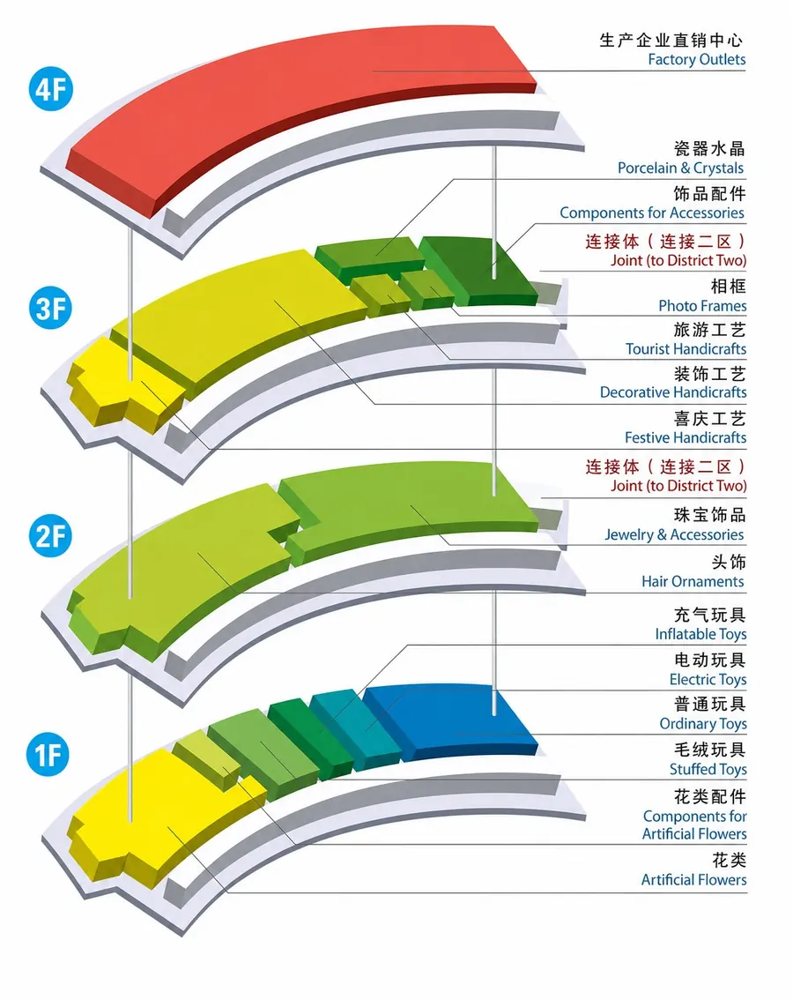
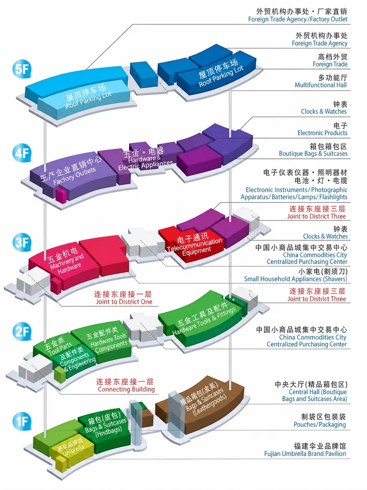
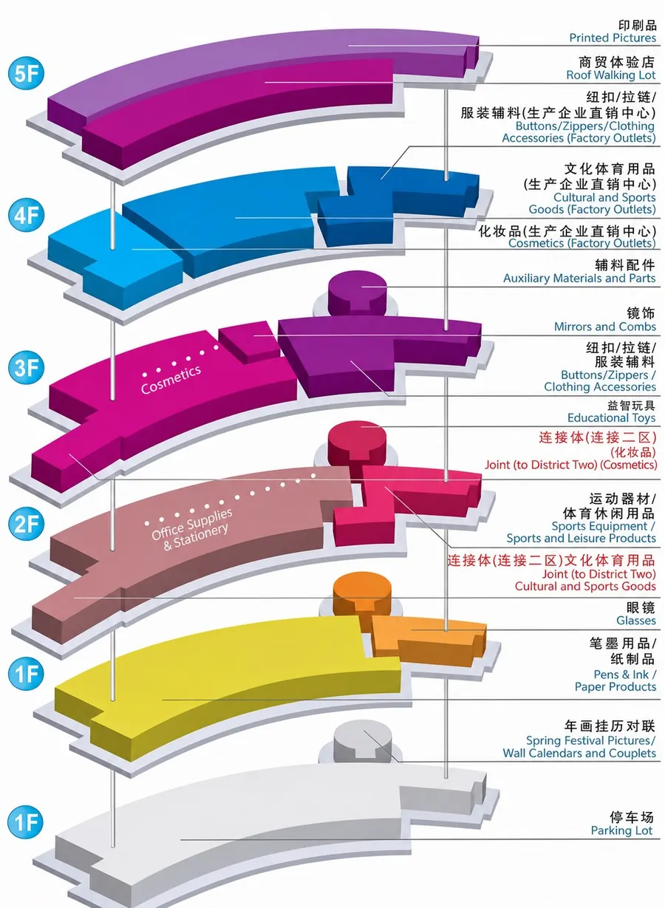

Sourcing Hub · Yiwu, China
Yiwu Market Guide.
Use these district maps to make your market visit more focused. Start with the product category, shortlist the right areas, then turn promising finds into a controlled sourcing plan.
How to use this guide
Find the right starting point—then compare before you decide.
Start with the category
Use the maps to identify the districts and floors most relevant to your product brief.
Build a shortlist
Compare product variants, price basis, MOQ, packaging options and supplier capability.
Control the order
Move selected products through sample approval, quality checks, consolidation and delivery planning.

District 1
Gifts, crafts, toys and accessories.
District 1 is a strong starting point for seasonal and gift-led ranges. It is especially relevant when you are sourcing toy, craft, artificial-flower, jewellery or decorative-product programmes.

District 2
Hardware, bags, umbrellas, electronics and tools.
District 2 concentrates practical consumer goods and hardware-led categories. It is a useful route for buyers developing home, utility, travel, tool and electronics-adjacent product ranges.

District 3
Stationery, cosmetics, educational toys and fashion components.
District 3 is particularly relevant for office and school ranges, beauty accessories, cultural goods and product components. It can support both retail assortment work and more detailed private-label development.
The practical next step
A map gives you direction.
Local execution gives you control.
A productive Yiwu visit is not measured by how many booths you see. It is measured by the quality of your shortlist, the clarity of your product requirements and the decisions you can take after the visit.
- Supplier comparison against your product and target price.
- Sample, packaging and specification follow-up.
- Quality-control and consolidation planning before export.
Guide note: These maps are intended as a practical starting point for category planning. Shop locations, category mix and market arrangements can change; confirm the current location and supplier suitability before travel or order placement.
Yiwu in motion
See the sourcing hub
behind the guide.
Watch a short introduction to MU Group in Yiwu and the local ecosystem behind product discovery, supplier coordination and export-ready execution.
1 minute 59 seconds · Optimised for web playback